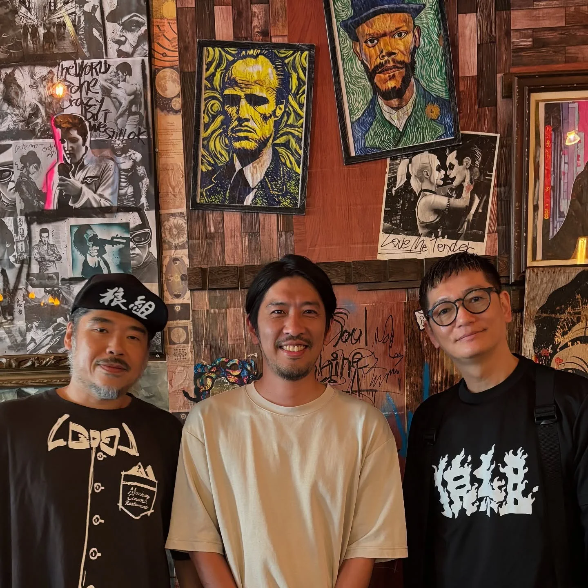
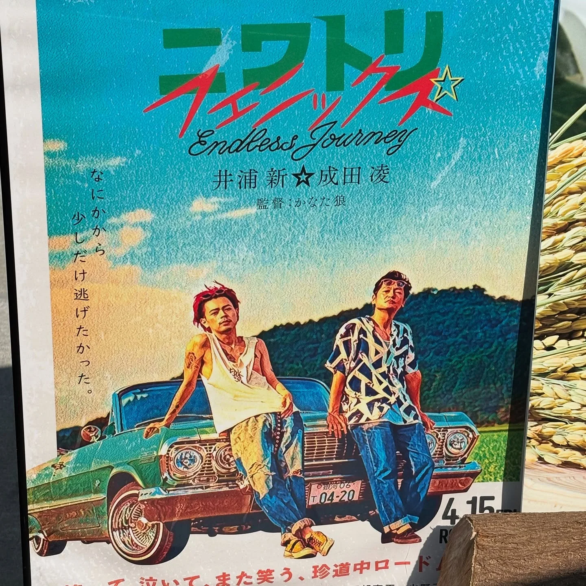
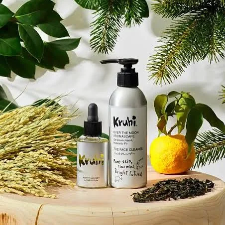

2025年8月3日
生きてたら1番好きな憧れの方に会えるもんやな。。。



生きてたら1番好きな憧れの方に会えるもんやな。。。 震えるわ。。。 若い頃からずっと好きやった人に会えました。 私の気持ちも伝えれました！ これで夏も乗り切れます！ ニワトリ⭐︎スターの監督のかなた狼さんのお店で井浦新さんが行っていたpop up Storeに参加。 素敵なお店での素敵な企画！ 今夜は寝れるかな😉 ↓↓↓紹介↓↓↓ 【kuruhi】 自分のために＝地球のために。植物のエネルギーで健やかな髪と素肌、環境循環を同時に叶えるサステナブルコスメKruhi。自然由来成分100％、化学物質フリー。 【Monkey Cinema Restaurant】 いつでもどこでも 映画を観られる時代だからこそ、 独自にセレクトしたここでしか 出会えない映画をスクリーンで 鑑賞してもらいたい。 そして、厳選された松阪牛を中心にした 無国籍料理やお酒を、 映画の余韻に包まれながら ゆっくり楽しんでもらいたい。 そんなひと時を味わってもらうために、 シネマとレストランが融合した 新しいエンタメの基地。 どちらもすごくおすすめです😉 #モンキーシネマレストラン #かなた狼 さん #井浦新 さん